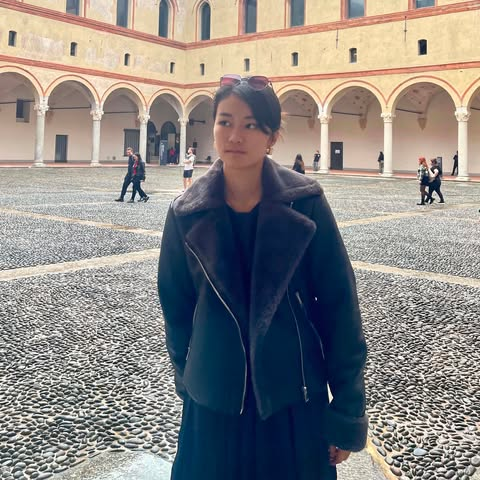
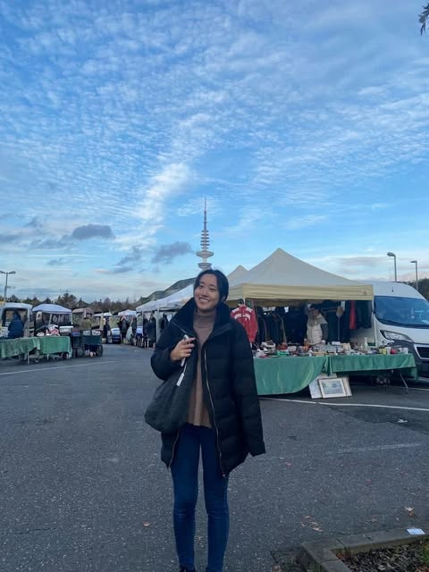

運営者について
代表運営者
あさひ
- 日本の大学で経済学部経営学科卒業
- 在学中、アイルランド、シンガポール、台湾等で語学研修や交換留学(英語及び中国語)
- 新卒で3年半東京のIT系企業勤務。
- 単身渡独。１年間語学学校に通い、約１３か月でドイツ語C１取得
- ２年目でワーホリ兼大学進学準備
- 現在ドイツ・ミュンヘンにて社会教育学専攻。児童養護施設にてインターンシップ
- Deutschland Stipendium(ドイツ政府奨学金)奨学生
- ドイツ語 TestDaF（CEFR C1相当）
あさひからのメッセージ
日本の大学で経済学を学び、卒業後はIT系企業に約3年半勤務しました。
当初、ドイツに渡ったのは「一度、海外で暮らしてみたい」という、ある意味では軽い気持ちからでした。ただ、海外で過ごす時間は、思っている以上に早く過ぎます。
最初の1年間、毎日語学学校に通いながら、「これから自分は何をしたいのか」という問いに向き合うようになりました。
東京で暮らしていた頃、ボランティア活動を通して、社会的に困難な状況に置かれている子どもたちの教育に関わった経験があります。それを振り返る中で、社会問題や青少年の教育について専門的に学びたいという思いが、明確になっていきました。
そして現在、ドイツの大学で社会教育学を学び、新しいキャリアを築いている真っ最中です。
とはいえ、海外での進学やキャリアチェンジは、決して簡単ではありません。
言語、ビザ、大学選び、生活費、学費、仕事、そして「本当にこれでいいのか」という迷い。見えない道を一歩ずつ切り開いてきました。
「道は歩いたあとにできる」という言葉が好きです。
前職や年齢に関係なく、新しい場所で新しい道を選ぶことはできる。
大学進学に限らず、ワーキングホリデー、現地の語学学校、生活費や学費などのお金のことまで、私自身が実際に経験したことを、リアルにお伝えします。
ただ、一歩を踏み出すのは、あなた自身です。
私の経験が、迷いながらも前に進もうとしている皆さまの、きっかけや後押しになりますように。

運営者
山田恵
- 2023年3月 中央大学法学部政治学科を卒業
- 2023年10月〜 オスナブリュック大学 Conflict Studies and Peacebuilding 修士課程
- 出願当時 IELTS 6.5／ドイツ語 A2
- ベルリンの難民・移民支援を目的とした非営利団体と、ボンの国連事務局でインターンシップ
- note「留学するならドイツ」執筆者
山田恵からのメッセージ
大学の時にイングランドに短期留学に行った時、初めて英語で学ぶ貴重な経験を得ると同時に、北半球の豊かな国から来た、私と同じような属性の人しかコースにいないことに気づきました。
その時から、一部のお金に余裕がある人たちだけで学問を学ぶという環境が、本当に自分の為になるのかと疑問を持ち、国公立大学の学費が無料であるドイツに留学先を決めました。
学部時代から、私の進路のテーマは戦争と平和に関するもので、グローバルサウスを含む色々な国の人と知り合いたいと、心の中ではなんとなく決まっていました。私は学問も留学も、経済的ゆとりや国籍に関わらず、全ての人に開かれているべきであると考えているからです。
その後、学部卒業後の春に、ドイツの国立大学中でも平和学に特化したコースにいくつか書類を出願し、8月にオスナブリュック大学から唯一合格を貰うことができました。
しかし、未だ前例が少ないドイツ留学に挑む上で、書類出願や住居関係、ビザ申請・延長で困難が生じることは多々ありました。その時の経験を少しだけでもシェアすることができれば幸いです。どうぞよろしくお願いします。

共同運営者・現役学生
あいり
- 幼少期にドイツ駐在を経験
- 日本の高校を卒業、IB（International Baccalaureate）取得
- Technical University of Hamburg（ハンブルク工科大学）B.Sc. Engineering Science
- 英語でエンジニアリングを学ぶ正規留学
- IELTS 7.0／Goethe A2
あいりからのメッセージ
幼少期にドイツ駐在を経験し、言語を学び、違うバックグラウンドを持つ人達と出会い、世界を知りました。その時の衝撃と楽しさが忘れられず、帰国した時から「私はドイツに戻って来るんだ」そう思いながら中高生活を過ごしました。過去の駐在体験や学費面から国はドイツと絞れていたため、高校生の時にエンジニアリングを英語で学びたいと決めてからはひたすらドイツの大学へと出願準備を行いました。
IB（International Baccalaureate)を取得し日本の高校を卒業してから、そのままドイツの大学に出願するのは決して簡単ではありませんでした。高校のクラスメイトが卒業時に少なくても一校から合格をもらえている中、私は出願も始まっていない状態でした。また、住まいを探すことにも信じられないくらい苦戦しました。それでも、常にドイツで大学生をするんだというビジョンを持ち続け、今は憧れていたドイツの工科大学で日本人として胸を張って正規留学できています。
若いころに世界を知ることは、これからの自分の人生観を大きく変えるものです。一人で異国に来て大学生をすることは決して楽しいだけの日々ではありません。それでもドイツでの大学生生活は自分に「可能性しか感じない」と思わせてくれます。私の経験が少しでもドイツ留学を迷っている、興味のある方が勇気を出して一歩を踏み出す後押しになれば幸いです.